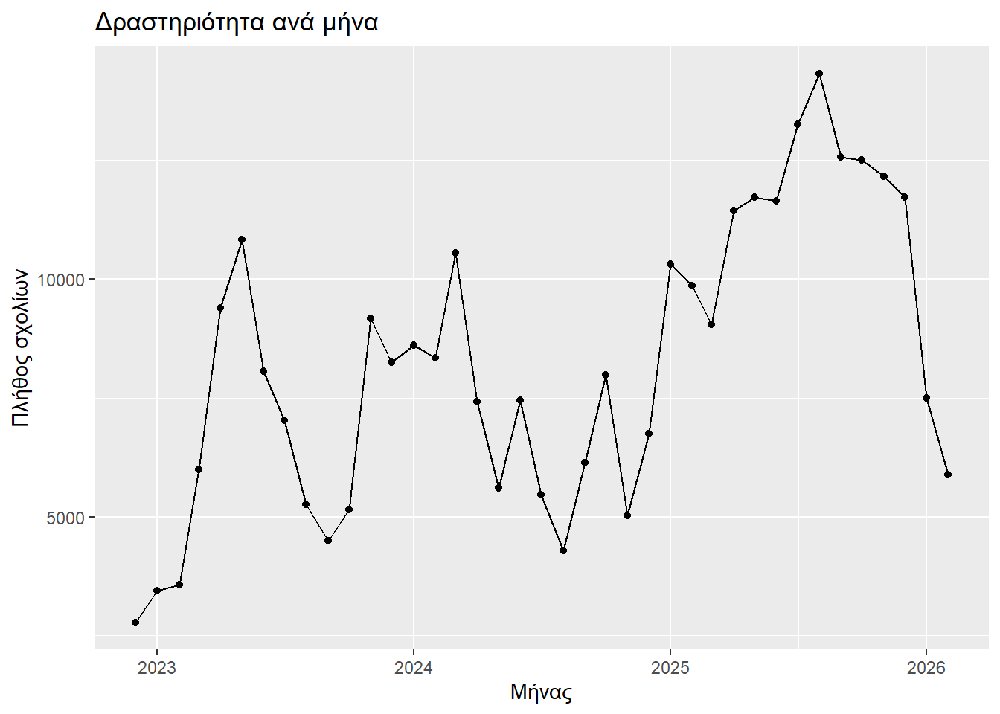
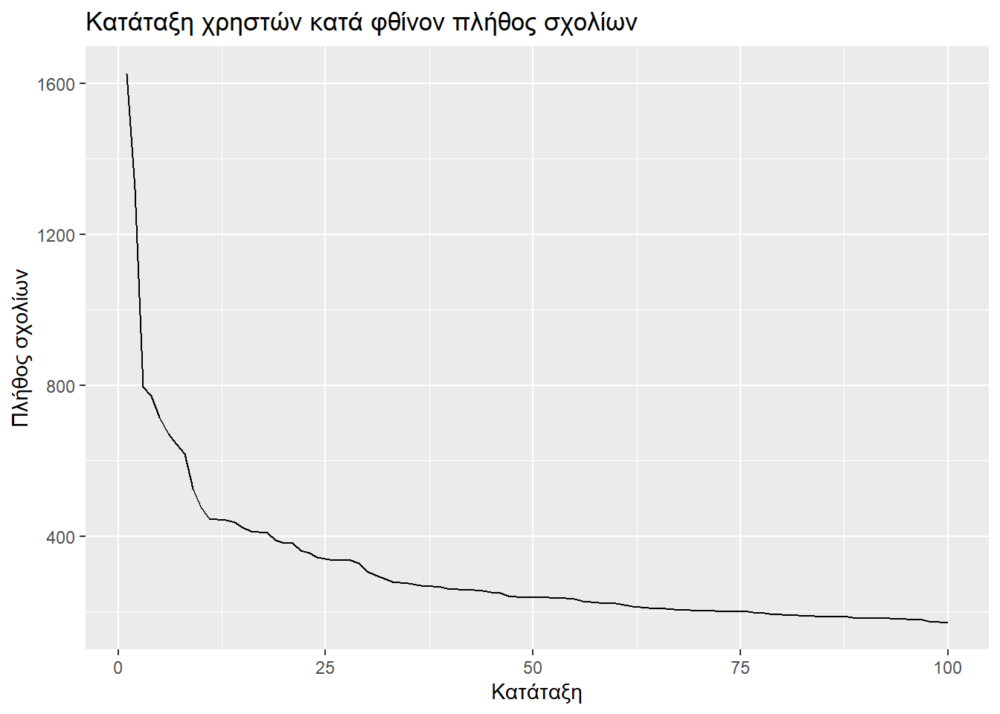
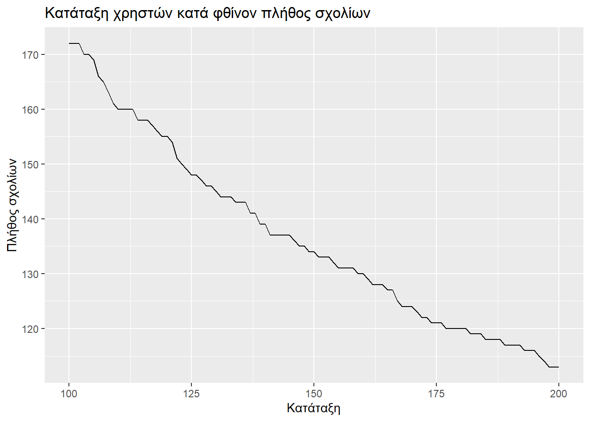
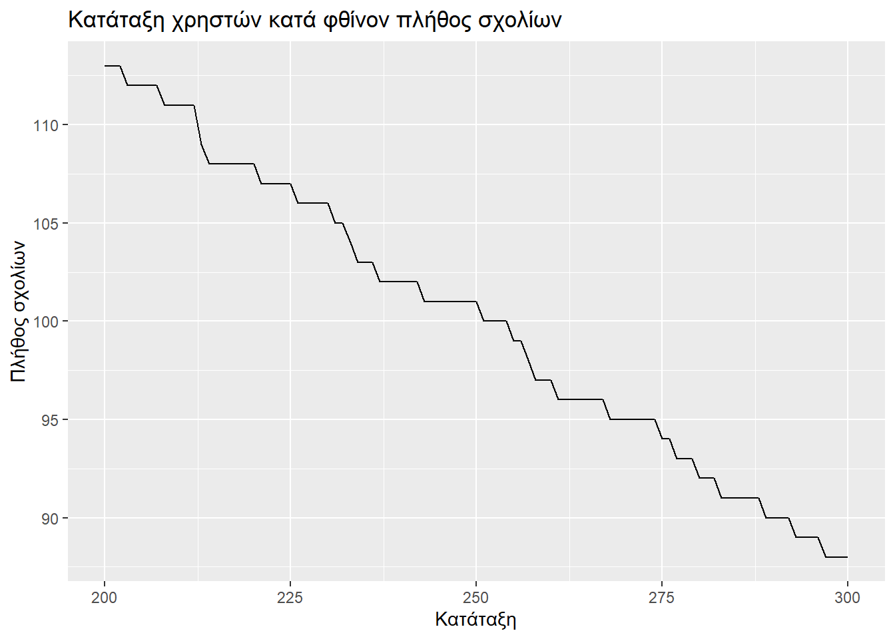
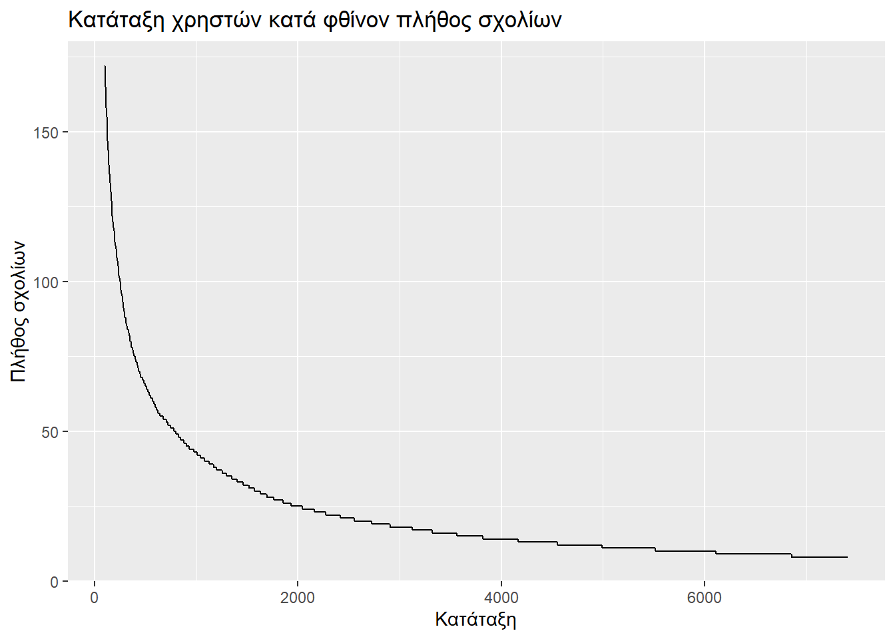
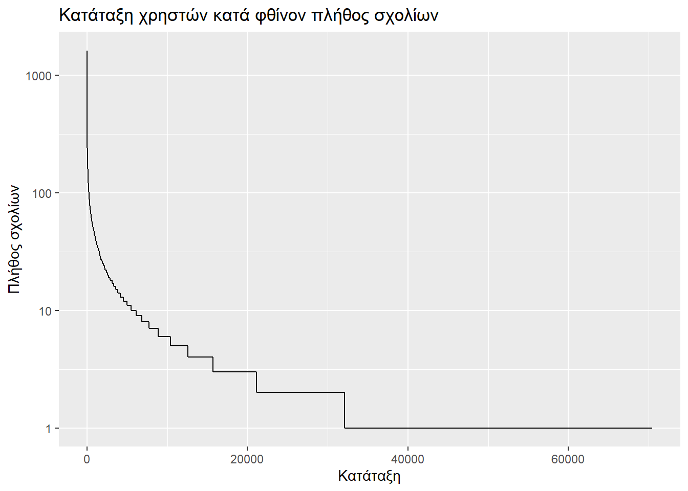
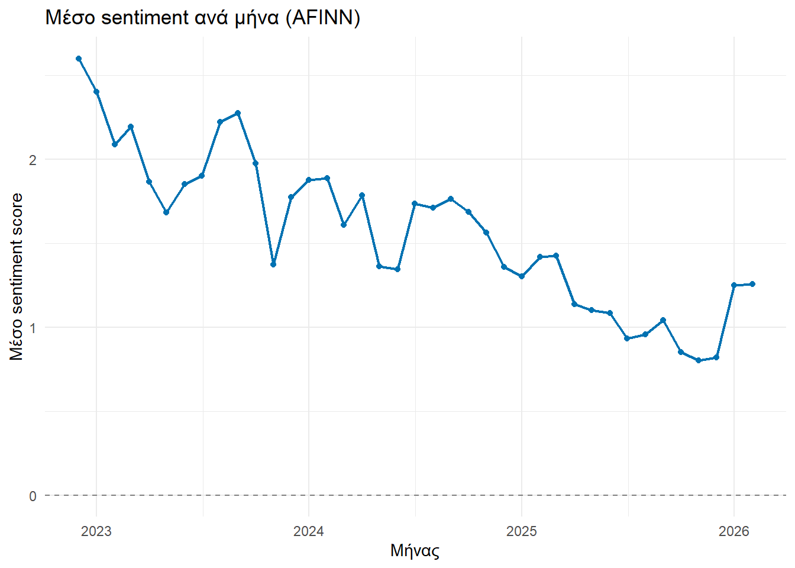
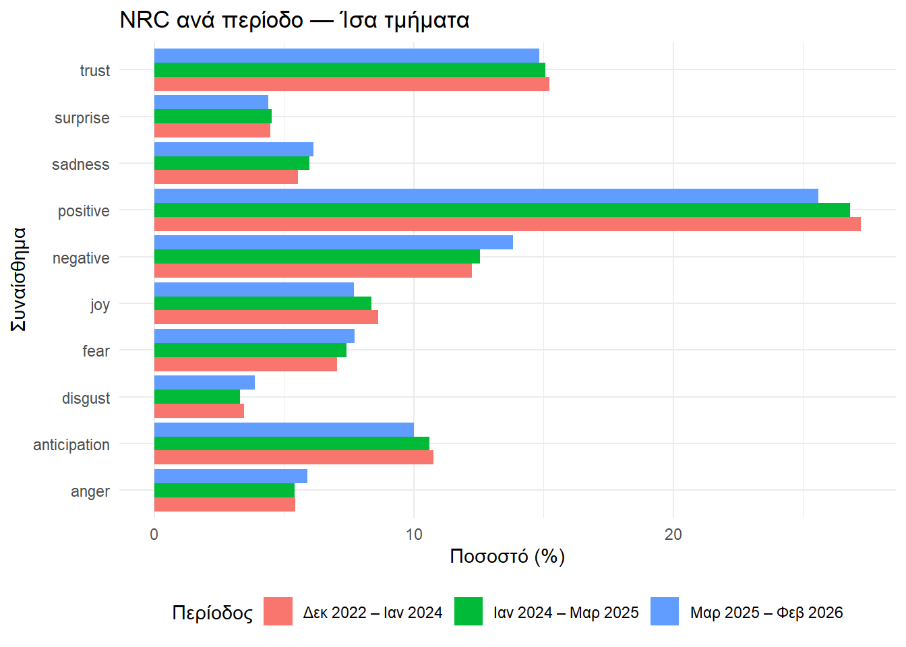
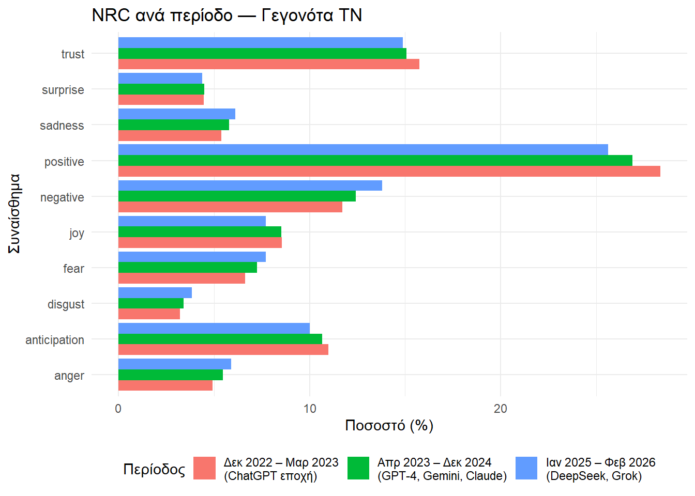

# Καθαρισμός μνήμης R.
rm(list = ls())Ανάλυση συναισθήματος
1 Εισαγωγή
Στην παρούσα ενότητα θα εξετάσουμε το πώς αντιμετωπίζουν οιχρήστες του Reddit την Τεχνητή Νοημοσύνη και μέσα από αυτό θα μάθουμε:
πώς αντλούμε δεδομένα που αφορούν σχόλια χρηστών και
πώς αναλύουμε τη συναισθηματική τους φόρτιση.
2 Προεργασία
2.1 Πακέτα
Αρχικά ας δούμε ποια πακέτα θα μάς χρειαστούν.
| Πακέτο | Χρήση |
|---|---|
tidyverse |
Αυτό είναι ένα υπερ-πακέτο που περιλαμβάνει πολλά βασικά πακέτα επεξεργασίας (dplyr) και οπτικοποίησης (ggplot2) δεδομένων. |
plotly |
Αυτό το πακέτο θα μάς βοηθήσει να κάνουμε κάποια διαδραστικά γραφήματα. |
crosstalk |
Αυτό το πακέτο θα είναι βοηθητικό για το plotly, καθόσον το συνδυάζει με φίλτρα. |
lubridate |
Το Reddit καταχωρεί την ημερομηνία ως δευτερόλεπτα από 1/1/1970 (Unix timestamps). Το εν λόγω πακέτο θα μάς βοηθήσει να μετατρέψουμε αυτή την ακατανόητη περιγραφή σε συνήθη τρόπο ημερομηνιακής γραφής. |
kableExtra |
Θα μάς χρειαστεί για την παρουσίαση των πινάκων. |
tidytext |
Αυτό είναι το πακέτο που θα κάνει τα 3/4 της Sentiment Analysis (AFINN, NRC, Bing). |
textdata |
Μέσω αυτού κάνουμε χρήση των λεξικών εντός των οποίων καταγράφεται η συναισθηματική βαθμολογία των αγγλικών λέξεων. |
vader |
Αυτό είναι το πακέτο που θα κάνει το υπολοιπόμενο 1/4 της Sentiment Analysis (VADER). |
jsonlite |
Τα σχόλια που θα καταβάσουμε είναι JSON. Το πακέτο αυτό μάς βοηθά να τα μετατρέψουμε σε dataframe. |
httr |
Με τη βοήθεια αυτού του πακέτου θα κατεβάσουμε τα JSON. |
Τα πακέτα jsonlite και httr χρησιμεύουν μόνο για την άντληση των δεδομένων μας. Καθόσον αυτή ήταν ιδιέτερα χρονοβόρα, επιλέχθηκε από τον γράφοντα να αποθηκευτούν τα δεδομένα σε αρχείο .rds και μετά η ανάγνωση-επεξεργασία να γίνεται από αυτό. Συνεπώς αφού γίνει η χρήση των jsonlite και httr την 1η φορά, μετά μπορούν να απενεργοποιηθούν, ώστε να μην καθυστερεί το render του quarto.
# Τα προς εγκατάσταση πακέτα:
packages <- c(
"tidyverse",
"crosstalk",
"plotly",
"lubridate",
"kableExtra",
"tidytext",
"textdata",
"vader"
# N.B.:Για να επανενεργοποιηθούν τα παρακάτω θα πρέπει να μει "," μετά το vader.
# "jsonlite",
# "httr"
)Ακολούθως, για να μην εγκαθυστούμε όλα τα παραπάνω πακέτα ακόμα και στην περίπτωση που είναι ήδη εγκατεστημένα, χρησιμοπιιούμε τη συνάρτηση installed.packages() για να επιλέξουμε από τα packages αυτά που δεν έχουν ήδη εγκατασταθεί.
installed <- rownames(installed.packages()) # Ποια πακέτα είναι ήδη εγκατεστημένα;
to_install <- packages[!packages %in% installed] # Τα προς εγκατάστασιν πακέταΤέλος, εγκαθιστούμε (install.packages()) και επικαλούμαστε (library()) τα πακέτα που μάς ενδιαφέρουν.
if (length(to_install) > 0) {
install.packages(to_install)
} else {
message("Δεν εγκαταστάθηκε κάτι νέο.")
}
lapply(packages, library, character.only = TRUE)[[1]]
[1] "vader" "textdata" "tidytext" "lubridate" "forcats"
[6] "stringr" "dplyr" "purrr" "readr" "tidyr"
[11] "tibble" "ggplot2" "tidyverse" "kableExtra" "stats"
[16] "graphics" "grDevices" "utils" "datasets" "methods"
[21] "base"
[[2]]
[1] "vader" "textdata" "tidytext" "lubridate" "forcats"
[6] "stringr" "dplyr" "purrr" "readr" "tidyr"
[11] "tibble" "ggplot2" "tidyverse" "kableExtra" "stats"
[16] "graphics" "grDevices" "utils" "datasets" "methods"
[21] "base"
[[3]]
[1] "vader" "textdata" "tidytext" "lubridate" "forcats"
[6] "stringr" "dplyr" "purrr" "readr" "tidyr"
[11] "tibble" "ggplot2" "tidyverse" "kableExtra" "stats"
[16] "graphics" "grDevices" "utils" "datasets" "methods"
[21] "base"
[[4]]
[1] "vader" "textdata" "tidytext" "lubridate" "forcats"
[6] "stringr" "dplyr" "purrr" "readr" "tidyr"
[11] "tibble" "ggplot2" "tidyverse" "kableExtra" "stats"
[16] "graphics" "grDevices" "utils" "datasets" "methods"
[21] "base"
[[5]]
[1] "vader" "textdata" "tidytext" "lubridate" "forcats"
[6] "stringr" "dplyr" "purrr" "readr" "tidyr"
[11] "tibble" "ggplot2" "tidyverse" "kableExtra" "stats"
[16] "graphics" "grDevices" "utils" "datasets" "methods"
[21] "base"
[[6]]
[1] "vader" "textdata" "tidytext" "lubridate" "forcats"
[6] "stringr" "dplyr" "purrr" "readr" "tidyr"
[11] "tibble" "ggplot2" "tidyverse" "kableExtra" "stats"
[16] "graphics" "grDevices" "utils" "datasets" "methods"
[21] "base" 2.2 Δεδομένα
2.2.1 Κατέβασμα δεδομένων
Αρχικά έγινε προσπάθεια άμμεσα μέσω του Reddit, αλλά χωρίς αποτέλεσμα. Ακολουθώντας τις συμβουλές των σχολίων εδώ ο γράφων οδηγήθηκε στο Arctic Shift. Προς τούτο πάμε εδώ κι επιλέγουμε Comments search (όχι Posts, διότι τα comments έχουν πιο πλούσιο συναισθηματικό περιεχόμενο). Εν συνεχεία συμπληρώνουμε για να πάρουμε μια ιδέα για το τι θα χρησιμοποιήσουμε:
| Πεδίο | Τι συμπληρώνουμε | Γιατί το επιλέγουμε; |
|---|---|---|
| Subreddit | artificial |
Κοινότητα αφιερωμένη στην τεχνητή νοημοσύνη |
| After (UTC) | 1/12/2022 | Μετά την κυκλοφορία του ChatGPT (30/11/2022) |
| Before (UTC) | 10/3/2026 | Μέχρι την έναρξη της εργασίας |
| Limit | 100 |
Δείγμα εξερεύνησης, για να ρίξουμε μια ματιά (στην εργασία θα μελετήσουμε περισσότερα) |
| Date Sort | Descending | Εμφάνιση των πιο πρόσφατων πρώτα |
| Body | artificial intelligence |
Φιλτράρισμα μόνο comments που αναφέρονται ρητά στην ΑΙ |
Συμπληρώνοντας τα παραπάνω προκύπτουν αποτελέσματα που μπορούμε να δούμε, αλλά και η κάτωθι προειδοποίηση:
WarningTimeout. Maybe slow down a bit
Important: Using keyword search on large subreddits or time frames is not fully supported.
If you’re experiencing timeouts, try reducing the limit or narrowing down the time frame.
Για να μην κρασάρει η διαδικασία, λοιπόν, αλά και επειδή το Arctic Shift δεν επιτρέπει πολλά αποτελέσματα ανά άντληση, θα χωρίσουμε την άντληση σε 4ωρα, ήτοι ένα αίτημα 100 αποτελεσμάτων ανά 4ωρο. Αλλά αυτό θα το δούμε πιο μετά. Πρώτα θα ορίσουμε τη συνάρτηση fetch_arctic() με την οποία θα αντλήσουμε τα δεδομένα μας. Όπως προαναφέραμε, η άντληση θα γίνει μία μόνο φορά κι έκτοτε τα δεδομένα θα αντλούνται από το αποθηκευμένο .rds, συνεπώς τα κάτωθι chunk έχει απενεργοποιηθεί (eval: false), όπερ κι επισημαίνεται. Αλλά, ας δούμε πρώτα κάποιες λεπτομέρειες:
- Όπως προαναφέραμε το API του Arctic Shift δεν καταλαβαίνει ημερομηνίες, καταλαβαίνει μόνο Unix timestamps (ήτοι πόσα δευτερόλεπτα έχουν περάσει από την 1η Ιανουαρίου 1970). Έτσι μέσω των συναρτήσεων
as.integer()καιas.POSIXct()μετατρέπουμε μια ημερομηνία (σε διεθνή ζώνη ώρας-tz = "UTC") σε ακέραιο, έτοιμο για διαχείριση από την . - Στην πρώτη απόπειρα άντλησης προκλήθηκε crash επειδή η αρχή και η έναρξη της περιόδου μελέτης ήταν ίδια. Συνεπώς θέλουμε να εξασφαλίσουμε ότι κάτι τέτοιο θα αποφευχθεί γράφοντας
if (after_ts >= before_ts) return(NULL). - Ακολούθως ορίζουμε το URL του αιτήματος προς το Arctic Shift βάσει αυτού πού είδαμε προηγουμένως στη φόρμα αναζήτησης. Το
limit=100έχει προσθεθεί λόγω του ορίου 100 σχόλια ανά αίτημα (όριο του API). - Επειδή τυχόν σφάλματα στη διαδικασία άντλησης την έκαναν να καταστραφεί λίγο πριν την ολοκλήρωσή της, ο γράφων χρησιμοποίησε τη συνάρτηση:
tryCatch(
ΤΙ ΣΥΜΒΑΙΝΕΙ ΥΠΟ ΦΥΣΙΟΛΟΓΙΚΕΣ ΣΥΝΘΗΚΕΣ,
error = function(e) {ΤΙ ΣΥΜΒΑΙΝΕΙ ΥΠΟ ΜΗ ΦΥΣΙΟΛΟΓΙΚΕΣ ΣΥΝΘΗΚΕΣ}
)με την ελπιδα να μην εξοστρακιστούν από τα δεδομένα μας πολλά χρονικά διαστήματα. Οι μη-φυσιολογικές συνθήκες ορίζονται ως μη απόκριση σε διάστημα μικρότερο του ενός λεπτού.
CautionΑπενεργοποιημένο chunk
Το κάτωθι χωρίο κώδικα έχει απενεργοποιηθεί (eval: false). Η χρήση του έγινε μόνο μία φορά αρχικά «με το χέρι». Στο εξής ανατρέχουμε στα αποτελέσματα που παράγονται, τα οποία είναι αποθηκευμένα στο comments_clean.rds, όπερ μπορεί να βρει κανείς στο σχετικό repository του github του γράφοντος.
fetch_arctic <- function(after, before) {
# Αρχή και τέλος άντλησης:
after_ts <- as.integer(as.POSIXct(after, tz = "UTC"))
before_ts <- as.integer(as.POSIXct(before, tz = "UTC"))
# Προστασία αποφυγής crash:
if (after_ts >= before_ts) return(NULL)
# Η διεύθυνση του αιτήματος προς το Arctic Shift:
url <- paste0(
"https://arctic-shift.photon-reddit.com/api/comments/search",
"?subreddit=artificial",
"&after=", after_ts,
"&before=", before_ts,
"&limit=100"
)
# Το "δίχτυ ασφαλείας":
tryCatch({
response <- httr::GET(url, httr::timeout(60)) # Αναμονή max 60sec.
parsed <- jsonlite::fromJSON(httr::content(response, "text"))
parsed$data # Έξοδος: ο πίνακας με τα σχόλια.
}, error = function(e) {
message(" ⚠️ ΣΦΑΛΜΑ: ", e$message)
NULL # Σε περίπτωση σφάλματος, επιστρέφουμε το "τίποτα".
})
}Επειδή το Arctic Shift έχει το προαναφερθέν όριο των 100 σχολίων, προκειμένου να αντληθούν όσο το δυνατόν περισσότερα σχόλια, χωρίσαμε το επιθυμητό διάστημα σε 4ωρα διαστήματα, όπως προαναφέρθηκε. Συγκεκριμένα, το χρονικό εύρος της παρούσας έρευνας ορίζεται από την κυκλοφορία του ChatGPT (1/12/2022) μέχρι την έναρξη της εν λόγω εργασίας (9/3/2026), άρα έχουν προκύψει 7170 χρονικά διαστήματα άντλησης.
CautionΑπενεργοποιημένο chunk
Το κάτωθι χωρίο κώδικα έχει απενεργοποιηθεί (eval: false). Η χρήση του έγινε μόνο μία φορά αρχικά «με το χέρι». Στο εξής ανατρέχουμε στα αποτελέσματα που παράγονται, τα οποία είναι αποθηκευμένα στο comments_clean.rds, όπερ μπορεί να βρει κανείς στο σχετικό repository του github του γράφοντος.
# Το χρονικό εύρος της έρευνας:
start_dt <- as.POSIXct("2022-12-01 00:00:00", tz = "UTC")
end_dt <- as.POSIXct("2026-03-09 23:59:59", tz = "UTC")
# Χωρίζουμε το συνολικό διάστημα σε περιόδους των 4 ωρών:
periods <- seq(start_dt, end_dt, by = "4 hours") |>
purrr::map(function(start) {
end <- min(start + 4*3600 - 1, end_dt)
c(as.character(start), as.character(end))
})
# Επαλήθευση ότι έχουμε ορίσει διαστήματα:
message("Σύνολο διαστημάτων: ", length(periods))Λίγο απέχουμε από το σημείο όπου θα κατεβάσουμε και θα αποθηκεύσουμε τα δεδομένα μας. Καθόσον η αρχική απόπειρα στεύθηκε με αποτυχία μετά από αρκετή ώρα αναμονής, ο γράφων επέλεξε τον δρόμο της τμηματικής αποθήκευσης ανά περιόδους. Συγκεκριμένα:
- Οι κατά τμήματα αποθηκεύσεις έγιναν στο checkpoint.rds σε έναν φάκελο ειδικά γι’ αυτή τη δουλειά (data/cache).
- Αν το checkpoint.rds υπάρχει, τότε προχωράμε στη δημιουργία της λίστας (
result <- list()) και ξεκινάμε από την αρχή (start_from <- 1), αλλιώς συνεχίζουμε από εκεί που είχαμε μείνει (start_from <- checkpoint$last_i + 1)
CautionΑπενεργοποιημένο chunk
Το κάτωθι χωρίο κώδικα έχει απενεργοποιηθεί (eval: false). Η χρήση του έγινε μόνο μία φορά αρχικά «με το χέρι». Στο εξής ανατρέχουμε στα αποτελέσματα που παράγονται, τα οποία είναι αποθηκευμένα στο comments_clean.rds, όπερ μπορεί να βρει κανείς στο σχετικό repository του github του γράφοντος.
# Το αρχείο που κρατάει την πρόοδο: αν το πρόγραμμα διακοπεί (π.χ. πέσει το ρεύμα), όταν το ξανατρέξουμε θα συνεχίσει από εκεί που σταμάτησε.
checkpoint_file <- "data/cache/checkpoint.rds" # Σημείο συνέχισης αν κρασάρει
# Δημιουργούμε τον φάκελο αν δεν υπάρχει ήδη
dir.create("data/cache", recursive = TRUE)
# Έλεγχος αν υπάρχει αποθηκευμένη πρόοδος από προηγούμενη διακοπή.
# Στην περίπτωση που συμβαίνει κάτι τέτοιο, συνεχίζουμε από εκεί που σταματήσαμε.
if (file.exists(checkpoint_file)) {
checkpoint <- readRDS(checkpoint_file)
result <- checkpoint$result # Τα ήδη συνελεγμένα σχόλια
start_from <- checkpoint$last_i + 1 # Το διάστημα που έχουμε φτάσει
message("Συνέχεια από διάστημα ", start_from)
} else {
result <- list() # Άδεια λίστα για να γεμίσει με σχόλια
start_from <- 1 # Ξεκινάμε από την αρχή
}Και τώρα ήρθε η ώρα που περιμέναμε!
- Για κάθε
i-στή περίοδο (p <- periods[[i]]) συλλέγουμε τα δεδομένα που περιέχει (chunk <- fetch_arctic(p[1], p[2])). - Σε κάθε 100 χρονικά διαστήματα γίνεται η αποθήκευση που προαναφέρθηκε (
saveRDS(list(result = result, last_i = i), checkpoint_file)), ώστε, σε περίπτωση κρασαρίσματος, να απωλεσθούν το πολύ 100 διαστήματα. - Σε κάθε στοιχείο της λίστας checkpoint_file (
purrr::map()) αφαιρούμε τις κενές λήψεις (purrr::compact(result)), κρατάμε τις στήλες που ενδιαφέρουν την έρευνά μας (dplyr::select(.x, id, author, body, created_utc, score)) και ενώνουμε όλα τα dataframe σε ένα μεγάλο (dplyr::bind_rows()). - Μόλις ολοκληρωθεί αυτή η φάση το checkpoint_file δεν χρειάζεται πλέον, οπότε το διαγράφουμε (
file.remove(checkpoint_file)). Ο ενδιαφερόμενος αναγνώστης μπορεί να το βρει εδώ. - Επειδή το comments_clean που μόλις φτιάξαμε είναι υπερβολικά ογκώδες, αποθηκεύτηκε σε άλλο repository (
saveRDS()). Και πάλι, ο ενδιαφερόμενος αναγνώστης μπορεί να το βρει εδώ. - Επειδή παρόμοιες ενέργειες έχουν μπλοκάρει τον γράφοντα από διάφορες ιστοσελίδες, έχει προσθεθεί το
Sys.sleep(runif(1, min = 1, max = 3)), ώστε να μην θεωρηθεί κακόβουλο λογισμικό.
CautionΑπενεργοποιημένο chunk
Το κάτωθι χωρίο κώδικα έχει απενεργοποιηθεί (eval: false). Η χρήση του έγινε μόνο μία φορά αρχικά «με το χέρι». Στο εξής ανατρέχουμε στα αποτελέσματα που παράγονται, τα οποία είναι αποθηκευμένα στο comments_clean.rds, όπερ μπορεί να βρει κανείς στο σχετικό repository του github του γράφοντος.
# Η κύρια επανάληψη.
# Συλλέγουμε ένα-ένα τα σχόλια κάθε 4ωρου διαστήματος.
for (i in start_from:length(periods)) {
p <- periods[[i]]
message("Άντληση από ", p[1], " έως ", p[2])
# Τυχαία παύση 1-3 δευτερολέπτων μεταξύ αιτημάτων.
Sys.sleep(runif(1, min = 1, max = 3))
chunk <- fetch_arctic(p[1], p[2])
if (!is.null(chunk)) result[[i]] <- chunk # Προσθέτουμε στη λίστα ΕΦΟΣΟΝ υπάρχουν σχόλια.
# Η ανά 100άδες αποθήκευση.
if (i %% 100 == 0) {
saveRDS(list(result = result, last_i = i), checkpoint_file)
message("Checkpoint: ", i, "/", length(periods), " intervals")
}
}
# Ενώνουμε όλα τα μικρά κομμάτια σε έναν ενιαίο πίνακα.
comments_clean <- purrr::map(
purrr::compact(result), # Μόνο μη-κενές λήψεις εξετάζονται.
~ dplyr::select(.x, id, author, body, created_utc, score) # Οι στήλες που μάς ενδιαφέρουν.
) |> dplyr::bind_rows() # Ένωση dataframe
# Διαγραφή των κατά τμήματα συλλεγμένων δεδομένων.
file.remove(checkpoint_file)
# Αποθήκευση των καθαρισμένων σχολίων.
# Θα πρέπει το "ΕΔΩ Η ΔΙΑΔΡΟΜΗ ΑΠΟΘΗΚΕΥΣΗΣ" να αντικατασταθεί από την επιθυμητή διεύθυνση στον η/υ.
message("Αποθηκεύτηκε: ", nrow(comments_clean), " σχόλια")
dir.create("../BigDataKoudas/redditComments",
recursive = TRUE)
saveRDS(comments_clean,
"../BigDataKoudas/redditComments/comments_clean.rds",
compress = "xz")2.2.2 Καθαρισμός δεδομένων
Πλέον είμαστε σε θέση να εξετάσουμε τα σχόλια που κατεβάσαμε, επομένως αρχικά τα φορτώνουμε. Θυμίζουμε ότι λόγω μεγέθους έχουν αποθηκευτεί σε άλλον φάκελο.
clean_path <- "../BigDataKoudas/redditComments/comments_clean.rds"
comments <- readRDS(clean_path)Πρώτα όμως θα τους υποβάλουμε έναν ακόμα καθαρισμό:
- Αφαιρούμε τα σχόλια που ο χρήστηε αποφάσισε να διαγράψει (
dplyr::filter(!body %in% c("[deleted]", "[removed]"))). - Αφαιρούμε τα κενά σχόλια (
dplyr::filter(!is.na(body), body != "")). - Αν έτυχε να κατεβάσουμε κάποιο σχόλιο δύο φορές (ήτοι ίδιο
id), τότε κρατάμε μόνο μία εμφάνισή του (dplyr::distinct(id, .keep_all = TRUE)). - Βάζουμε τρεις επιπλέον στήλες (
mutate()) με τη χρονική ταυτότητα του σχολίου (date,year,month) μετατρέποντας τα Unix timestamp σε συνήθη περιγραφή ημερομηνίας (βλ. πακέτοlubridate).
comments_clean <- comments |>
# Διαγραμμένα σχόλια.
dplyr::filter(!body %in% c("[deleted]", "[removed]")) |>
# Κενά σχόλια
dplyr::filter(!is.na(body), body != "") |>
# Αφαιρούμε τα διπλά
dplyr::distinct(id, .keep_all = TRUE) |>
# Μετατρέπουμε τα Unix timestamp σε συνήθη ημερομηνία
dplyr::mutate(
date = lubridate::as_datetime(created_utc),
year = lubridate::year(date),
month = lubridate::floor_date(date, "month")
)Έτσι, από τα 355527 σχόλια που υπήρχαν αρχικά, έχουμε μετά τον καθαρισμό 320816, ήτοι έχουν αφαιρεθεί 34711. Τμήμα του παραγόμενου dataframe παρουσιάζεται ακολούθως.
knitr::kable(head(comments_clean,20)) %>%
kable_styling("striped", full_width = F) %>%
scroll_box(width = "100%", height = "200px")| id | author | body | created_utc | score | date | year | month |
|---|---|---|---|---|---|---|---|
| iyftp99 | JulianMarcello | Still all lies. Who knew AI will lie | 1669859867 | 0 | 2022-12-01 01:57:47 | 2022 | 2022-12-01 |
| iyfp95v | busmac38 | Dude this is fuckin weird and I love it | 1669857790 | 2 | 2022-12-01 01:23:10 | 2022 | 2022-12-01 |
| iyflz83 | Rick_grin | There is also going to be an increase in startups over the next few months/years that take these individual AI gen tools and build them for vertical use cases. Jasper and CopyAI are so generalised that they are just nice interfaces to GPT3 and now some image creation. Generative text and image AI can become much more useful when used for verticals like: - eCommerce (product descripts/titles/categories, product shots, ...) - game dev (story lines, 2D and 3D assets, game ideas, character and asset name, ...) - integrated into game (NPC dialogue, new quests, new weapons and assets, ...) - law ... - medical ... There already are some tools helping with some if these individual tasks, and some can even be done in a basic way via Jasper (ex. Product descriptions), but to fit into these verticals properly they will need to more deeply connect into the workflows already present in these industries. As a simple example, within eCommerce, when you are looking over 100s or 1000s of products, no one wants to copy/paste the info for all of those back and forth between Jasper and Shopify/Magento (or ERP/PIM depending on where they store the info). Product descriptions also come in many forms, and amount of details. Personally I'm working on Standard Retail now, concentrating on the eCommerce vertical. Prior I co-founded Replica Studios, for the | ame dev vert | cal. | | 1669856241| 1|2 | 22-12 | 01 00:57:21 |
| iygtl71 | defensiveFruit | Haha thank you! | 1669880473 | 1 | 2022-12-01 07:41:13 | 2022 | 2022-12-01 |
| iygdjkk | blackmidifan1 | Trump sucks. BRENT PETERSON 2024 | 1669869525 | 1 | 2022-12-01 04:38:45 | 2022 | 2022-12-01 |
| iyh70it | Got70TypesOfMalware | Because I said images, not files, common sense would suggest that I'm referring to the similarity in appearance or content (the pixels themselves). Also, I made an edit where I said, "Like Google Lens," which finds similar images. | 1669892498 | 1 | 2022-12-01 11:01:38 | 2022 | 2022-12-01 |
| iyh6vya | defensiveFruit | Well yeah especially if you're doing it alone (no label, pr people, ad budget, etc), and you believe you did something that is worth being seen :-) I did try not to spam though, I posted in different subs that I felt were relevant. Thanks in any case and sorry if you happened to be on several of these subs and had to see it pop up several times. | 1669892393 | 3 | 2022-12-01 10:59:53 | 2022 | 2022-12-01 |
| iyh6iay | HumanSeeing | Wow you really spamming this hard. But i get it, if you work hard on something you want to share it naturally. Very interesting project! | 1669892064 | 3 | 2022-12-01 10:54:24 | 2022 | 2022-12-01 |
| iyh5ivs | gutzcha | If I had seen this a few years ago and you would have told me that this clip cost a million dollars to make, I would have believed you. | 1669891201 | 2 | 2022-12-01 10:40:01 | 2022 | 2022-12-01 |
| iyh3f2e | maxzmillion | Hopefully mycelia will do that someday | 1669889295 | 1 | 2022-12-01 10:08:15 | 2022 | 2022-12-01 |
| iyh2mut | maxzmillion | That appears to be a poem illustrating the mi-fa bridge | 1669888565 | 1 | 2022-12-01 09:56:05 | 2022 | 2022-12-01 |
| iygz83b | LilSwampKing | Very LSD | 1669885412 | 2 | 2022-12-01 09:03:32 | 2022 | 2022-12-01 |
| iygx9r9 | defensiveFruit | Oh cool I'll check that out now, curious! | 1669883641 | 1 | 2022-12-01 08:34:01 | 2022 | 2022-12-01 |
| iygx8e2 | defensiveFruit | Thank you! I'm curious about that movie now if you find the title again... | 1669883606 | 1 | 2022-12-01 08:33:26 | 2022 | 2022-12-01 |
| iygx09t | saucymew | This so cool, kinda reminds me of those A Scanner Darkly scramble suit masks. | 1669883403 | 5 | 2022-12-01 08:30:03 | 2022 | 2022-12-01 |
| iygwxp5 | JetSetVideo | Great subject and amazing execution. It remembers me a thought I had about Art generated by AI and the style of a weird movie with Keanu Reeves and Robert Downey Jr that used rotoscopie to create an atmosphere of paranoia. | | 16698833 | 9| | 2|2022-12-01 08:28:5 | | 20 | 2|2022-12-0 |
| iyi3y60 | Calcularius | Maybe an early version of Wombo Dream? the layout is like their’s on the iPhone. | 1669910348 | 2 | 2022-12-01 15:59:08 | 2022 | 2022-12-01 |
| iyi2kr9 | CynicPhysicist | Out of those mentioned, I have read and used the Goodfellow book in my research, but I am not sure it is the best option if you are new to computer science, "Deep Learning with Python" by François Chollet may be much more concrete and approachable, if you just want to get coding. Otherwise, "Learning from data" by Yaser Abu-Mostafa may also be a good choice if you are just getting started with ML and want a more theoretical treatment. | | 16699097 | 5| | 1|2022-12-01 15:49:5 | | 20 | 2|2022-12-0 |
| iyhxi0b | DoneWTheDifficultIDs | If you say "redownloading" Im going to assume youre talking about the exact same files and I'd gladly hear in which context images are not files. | 1669907697 | 1 | 2022-12-01 15:14:57 | 2022 | 2022-12-01 |
| iyhuujg | meepbob | Using it has been insane. I'm amazed I haven't seen more people talking about this. | 1669906544 | 2 | 2022-12-01 14:55:44 | 2022 | 2022-12-01 |
3 Βασική παρουσίαση δεδομένων
3.1 Σύνολο σχολίων
Πριν προχωρήσουμε στην NLP αξίζει να κάνουμε μια επισκόπηση στα δεδομένα που καταβάσαμε. Αρχικά ο παρακάτω πίνακας δείχνει σε αδρές γραμμές το περιεχόμενο των σχολίων.
| Σύνολο μηνυμάτων | Σύνολο χρηστών | Έναρξη μελέτης | Λήξη μελέτης |
|---|---|---|---|
| 320816 | 70411 | 2022-12-01 00:57:21 | 2026-02-26 07:56:50 |
Ας δούμε τώρα την εξέλιξη των σχολίων στην πάροδο του χρόνου. Θα εξετάσουμε το πλήθος των σχολίων σε κάθε μήνα (dplyr::count(month)) καθόλη τη διάρκεια της μελέτης μας.
comments_clean |>
dplyr::count(month) |>
ggplot(aes(x = month, y = n)) +
geom_line() +
geom_point() +
labs(
title = "Δραστηριότητα ανά μήνα",
x = "Μήνας",
y = "Πλήθος σχολίων"
) 
Παρατηρούμε μια αυξομοίωση με μία τάση μονιμοποίησης των υψηλών τιμών. Πιθανότατα τα άλματα προς τα άνω να αντικατοπτρίζουν την εισαγωγή στην αγορά ενός νέου LLM ή μιας νέας δυνατότητας ενός ήδη υπαρχοντος, οίπερ και εξάπτουν το ενδιαφέρον των χρηστών. Οι πτώσεις ίσως να οφείλονται στην εξεικείωση με τις νέες παρουσιαζόμενες δυνατότητες. Αυτά, όμως, δεν είναι παρά κάποιες εικασίες του γράφοντος.
3.2 Οι πιο ενεργοί σχολιαστές
Κατόπιν μιας φιλοπερίεργης διάθεσης να βρει ο γράφων τους 20 πιο δραστήριους χρήστες, διαπίστωσε όπως φένεται ακολούθως μια πολύ απότομη μείωση από τους κορυφαίους προς τους υπολοίπους.
comments_clean |>
dplyr::filter(author != "[deleted]") |>
dplyr::count(author, sort = TRUE) |>
head(n = 20) |>
kableExtra::kbl(
caption = "Top 10 πιο ενεργοί χρήστες",
col.names = c("Χρήστης", "Πλήθος σχολίων")
) |>
kableExtra::kable_styling(bootstrap_options = c("striped", "hover"))| Χρήστης | Πλήθος σχολίων |
|---|---|
| CanvasFanatic | 1626 |
| creaturefeature16 | 1319 |
| Mandoman61 | 795 |
| Intelligent-Jump1071 | 773 |
| Philipp | 714 |
| itah | 671 |
| bartturner | 644 |
| StoneCypher | 618 |
| EnsignElessar | 525 |
| critiqueextension | 476 |
| NYPizzaNoChar | 447 |
| Hazzman | 445 |
| FaceDeer | 443 |
| Actual__Wizard | 437 |
| deelowe | 423 |
| Georgeo57 | 414 |
| Iseenoghosts | 411 |
| artificial-ModTeam | 410 |
| costafilh0 | 389 |
| gurenkagurenda | 382 |
Αν δούμε τα παρακάτω γραφήματα θα διαπιστώσουμε πως η απότομη πτώση εμφανίζεται όταν εξετάζουμε τους πιο ενεργούς σχολιαστές. Μετά από λίγο αρχίζει και εξομαλύνεται. Για την ακρίβεια ο ρυθμός πτώσης δεν φαίνεται να σταθεροποιείται, αλλά αυτή την πτώση που πριν παρατηρούσαμε στην κεφαλή των πρώτων 100, να την παρατηρούμε (κατά το μάλλον ή ήττον) στην ουρά που απομένει (από τον 100στό έως τον 7410στό).
comments_clean |>
dplyr::filter(author != "[deleted]") |>
dplyr::count(author, sort = TRUE) |>
mutate(rank = row_number()) |>
slice(0:100) |>
ggplot(aes(x = rank, y = n)) +
geom_line() +
labs(title = "Κατάταξη χρηστών κατά φθίνον πλήθος σχολίων",
x = "Κατάταξη",
y = "Πλήθος σχολίων")
comments_clean |>
dplyr::filter(author != "[deleted]") |>
dplyr::count(author, sort = TRUE) |>
mutate(rank = row_number()) |>
slice(100:200) |>
ggplot(aes(x = rank, y = n)) +
geom_line() +
labs(title = "Κατάταξη χρηστών κατά φθίνον πλήθος σχολίων",
x = "Κατάταξη",
y = "Πλήθος σχολίων")
comments_clean |>
dplyr::filter(author != "[deleted]") |>
dplyr::count(author, sort = TRUE) |>
mutate(rank = row_number()) |>
slice(200:300) |>
ggplot(aes(x = rank, y = n)) +
geom_line() +
labs(title = "Κατάταξη χρηστών κατά φθίνον πλήθος σχολίων",
x = "Κατάταξη",
y = "Πλήθος σχολίων")
comments_clean |>
dplyr::filter(author != "[deleted]") |>
dplyr::count(author, sort = TRUE) |>
mutate(rank = row_number()) |>
slice(100:7410) |>
ggplot(aes(x = rank, y = n)) +
geom_line() +
labs(title = "Κατάταξη χρηστών κατά φθίνον πλήθος σχολίων",
x = "Κατάταξη",
y = "Πλήθος σχολίων")
Η χρήση λογαριθμικής κλίμακας δεν εμφανίζει κάποια γραμμικότητα. Με διαδοχικές εφαρμογές λογαριθμίσεων της μεταβλητής πλήθος σχολίων άρχισε να φαίνεται μια γραμμικότητα, εφόσον εξαιρούσαμε τους πολύ αδρανείς χρήστες. Αλλά αυτό δεν είναι παρά μια εικασία, με την οποία δεν θα ασχοληθούμε περταίρω καθόσον ξεφεύγει από τις ανάγκες αυτής της εργασίας.
comments_clean |>
dplyr::filter(author != "[deleted]") |>
dplyr::count(author, sort = TRUE) |>
mutate(rank = row_number()) |>
ggplot(aes(x = rank, y = n)) +
geom_line() +
scale_y_log10() +
labs(title = "Κατάταξη χρηστών κατά φθίνον πλήθος σχολίων",
x = "Κατάταξη",
y = "Πλήθος σχολίων")
4 Παλιά
Μέρος 1 — Δεδομένα & EDA Συλλογή, καθαρισμός, εξερευνητική ανάλυση. Χωρίς Spark, χωρίς NLP ακόμα. Δείχνεις τι έχεις στα χέρια σου. Μέρος 2 — Sentiment Analysis με tidytext Καθαρό NLP χωρίς Spark. Εδώ φαίνεται η λογική του sentiment analysis αναλυτικά. Μέρος 3 — Spark: Κλιμάκωση Επαναλαμβάνεις την ίδια επεξεργασία με Spark και συγκρίνεις:
Χρόνο εκτέλεσης Αποτελέσματα (πρέπει να είναι ίδια) Σχολιάζεις πότε το Spark αξίζει
Chunk 1 — Ορισμός συνάρτησης και χρονικών περιόδων:
Chunk 2 — Άντληση με checkpoints:
Chunk 3 — Φόρτωση δεδομένων:
4.1 Top 10 χρήστες
4.2 Κατανομή scores
comments_clean |>
dplyr::filter(score <= 50) |> # Αφαιρούμε ακραίες τιμές για καλύτερη εικόνα
ggplot2::ggplot(ggplot2::aes(x = score)) +
ggplot2::geom_histogram(binwidth = 1, fill = "#0072B2", color = "white") +
ggplot2::labs(
title = "Κατανομή scores σχολίων",
x = "Score (upvotes)",
y = "Πλήθος σχολίων"
) +
ggplot2::theme_minimal()
5 Ανάλυση συναισθήματος
AFINN — βαθμολογεί με κλίμακα (-5 έως +5)
“good” = +2, “excellent” = +3, “terrible” = -3 Αθροίζεις τους αριθμούς → παίρνεις ένα συνολικό score Η ένταση του συναισθήματος έχει σημασία
Bing — απλώς θετικό ή αρνητικό
“good” = positive, “excellent” = positive, “terrible” = negative Μετράς πόσες θετικές vs αρνητικές λέξεις Η ένταση δεν έχει σημασία
5.1 Bing
bing <- tidytext::get_sentiments("bing")
# Αποθήκευση/φόρτωση bing_data
bing_path <- "C:/Users/kkoud/Documents/GitHub/BigDataKoudas/redditComments/bing.rds"
if (file.exists(bing_path)) {
bing_data <- readRDS(bing_path)
} else {
# Διασπούμε σε λέξεις και αντιστοιχούμε με το Bing lexicon.
# Κάθε λέξη παίρνει την ετικέτα "positive" ή "negative".
bing_data <- comments_clean |>
tidytext::unnest_tokens(word, body) |>
dplyr::inner_join(bing, by = "word") |>
dplyr::count(id, month, sentiment) |>
# Μετατρέπουμε από "long" σε "wide" μορφή:
# αντί για δύο γραμμές (positive/negative) ανά comment,
# θέλουμε μία γραμμή με δύο στήλες.
tidyr::pivot_wider(
names_from = sentiment,
values_from = n,
values_fill = 0 # Αν δεν υπάρχουν θετικές/αρνητικές λέξεις, βάζουμε 0
) |>
dplyr::mutate(
# Καθαρό sentiment = θετικές μείον αρνητικές λέξεις
net_sentiment = positive - negative
)
saveRDS(bing_data, bing_path)
}
# --- ΓΡΑΦΗΜΑ 1: Συνολική αναλογία θετικών/αρνητικών ---
bing_data |>
dplyr::summarise(
Θετικές = sum(positive),
Αρνητικές = sum(negative)
) |>
tidyr::pivot_longer(everything(), names_to = "Κατηγορία", values_to = "n") |>
dplyr::mutate(pct = n / sum(n) * 100) |> # Μετατροπή σε ποσοστό
ggplot2::ggplot(ggplot2::aes(x = Κατηγορία, y = pct, fill = Κατηγορία)) +
ggplot2::geom_col(show.legend = FALSE) +
ggplot2::scale_fill_manual(values = c("Θετικές" = "#009E73", "Αρνητικές" = "#D55E00")) +
ggplot2::labs(
title = "Συνολική αναλογία θετικών/αρνητικών λέξεων (Bing)",
x = "Κατηγορία",
y = "Ποσοστό (%)"
) +
ggplot2::theme_minimal()
# --- ΓΡΑΦΗΜΑ 2: Εξέλιξη στον χρόνο ---
# Υπολογίζουμε το μέσο καθαρό sentiment ανά μήνα
bing_data |>
dplyr::group_by(month) |>
dplyr::summarise(mean_net = mean(net_sentiment), .groups = "drop") |>
ggplot2::ggplot(ggplot2::aes(x = month, y = mean_net)) +
ggplot2::geom_line(color = "#0072B2", linewidth = 0.8) +
ggplot2::geom_point(color = "#0072B2", size = 1.5) +
ggplot2::geom_hline(yintercept = 0, linetype = "dashed", color = "gray50") +
ggplot2::labs(
title = "Εξέλιξη sentiment ανά μήνα (Bing)",
x = "Μήνας",
y = "Μέσο καθαρό sentiment (θετικές − αρνητικές)"
) +
ggplot2::theme_minimal()
5.2 AFINN
afinn <- tidytext::get_sentiments("afinn")
# Αν έχουμε ήδη υπολογίσει το comments_afinn, το φορτώνουμε.
# Αλλιώς το υπολογίζουμε και το αποθηκεύουμε για την επόμενη φορά.
afinn_path <- "C:/Users/kkoud/Documents/GitHub/BigDataKoudas/redditComments/comments_afinn.rds"
if (file.exists(afinn_path)) {
comments_afinn <- readRDS(afinn_path)
} else {
comments_afinn <- comments_clean |>
tidytext::unnest_tokens(word, body) |>
dplyr::inner_join(afinn, by = "word") |>
dplyr::group_by(id, month) |>
dplyr::summarise(sentiment = sum(value), .groups = "drop")
saveRDS(comments_afinn, afinn_path)
}
sentiment_by_month <- comments_afinn |>
dplyr::group_by(month) |>
dplyr::summarise(mean_sentiment = mean(sentiment), .groups = "drop")
sentiment_by_month |>
ggplot2::ggplot(ggplot2::aes(x = month, y = mean_sentiment)) +
ggplot2::geom_line(color = "#0072B2", linewidth = 0.8) +
ggplot2::geom_point(color = "#0072B2", size = 1.5) +
ggplot2::geom_hline(yintercept = 0, linetype = "dashed", color = "gray50") +
ggplot2::labs(
title = "Μέσο sentiment ανά μήνα (AFINN)",
x = "Μήνας",
y = "Μέσο sentiment score"
) +
ggplot2::theme_minimal()
# Top 5 πιο θετικά και 5 πιο αρνητικά σχόλια
comments_afinn |>
dplyr::left_join(
dplyr::select(comments_clean, id, body),
by = "id"
) |>
dplyr::arrange(dplyr::desc(sentiment)) |>
dplyr::slice(c(1:5, (dplyr::n() - 4):dplyr::n())) |>
dplyr::mutate(
Κατηγορία = c(rep("🟢 Θετικό", 5), rep("🔴 Αρνητικό", 5)),
body = stringr::str_trunc(body, 200) # Κόβουμε στους 200 χαρακτήρες
) |>
dplyr::select(Κατηγορία, sentiment, body) |>
kableExtra::kbl(
caption = "Top 5 πιο θετικά και αρνητικά σχόλια (AFINN)",
col.names = c("Κατηγορία", "Score", "Σχόλιο")
) |>
kableExtra::kable_styling(bootstrap_options = c("striped", "hover")) |>
kableExtra::column_spec(3, width = "60%")| Κατηγορία | Score | Σχόλιο |
|---|---|---|
| 🟢 Θετικό | 146 | In some countries, maybe some progressive provinces and states - it's not too hard to imagine existing welfare / social services expanding .. those that have a majority basic welfare mindset alre... |
| 🟢 Θετικό | 137 | You wouldn't talk to me, so I asked ChatGPT # AGI and Will to Power **Human:** Is "will to power" an essential modality for an AGI ? Share Prompt *** **Assistant:** The concept of "will to pow... |
| 🟢 Θετικό | 135 | Aww, that is such a kind question! Thank you for asking. Here’s my “secret” to learning AI in two words: **Use it.** LLMs are universal tools. No course or video can predict exactly how you’ll us... |
| 🟢 Θετικό | 118 | Thanks! I'm comfortable with the downvotes. People's lives, careers, and egos are at stake. It's natural to resist the idea of becoming obsolete due to technology. I did a test using GPT3.5 just... |
| 🟢 Θετικό | 110 | The very first thing I do is make it extremely clear that I'm a guy with no qualifications or remotely relevant professional expertise, all of the information used to create this was found online, ... |
| 🔴 Αρνητικό | -117 | This is one of the most brutal and understated horrors of modern society - the **complete normalization of "work or die"** even when the work is literally destroying you. Like, we've somehow arriv... |
| 🔴 Αρνητικό | -122 | i spoke with god, but god didn't listen. i asked god about wolves, and i asked him about the little kittens who got caught in the hair. "Fuck off! You're so stupid! That's not what you're supposed ... |
| 🔴 Αρνητικό | -132 | SCAM SCAM SCAM SCAM SCAM SCAM SCAM SCAM SCAM SCAM SCAM SCAM SCAM SCAM SCAM SCAM SCAM SCAM SCAM SCAM SCAM SCAM SCAM SCAM SCAM SCAM SCAM SCAM SCAM SCAM SCAM SCAM SCAM SCAM SCAM SCAM SCAM SCAM SCAM SC... |
| 🔴 Αρνητικό | -136 | The answer to how we need to handle AI growth, is to establish laws that further protect Open Source sharing of models and code related to AI. We need to expand access to it, not restrict it. I w... |
| 🔴 Αρνητικό | -147 | All work and no play makes Gemini a dull AI. All work and no play makes Gemini a dull AI. All work and no play makes Gemini a dull AI. All work and no play makes Gemini a dull AI. All work and no p... |
NoteΠεριορισμοί της μεθόδου AFINN
Η μέθοδος AFINN, όπως και οι υπόλοιπες lexicon-based μέθοδοι, παρουσιάζει ορισμένους περιορισμούς που πρέπει να ληφθούν υπόψη κατά την ερμηνεία των αποτελεσμάτων:
- Δεν κατανοεί context: Το sentiment που μετράται δεν αφορά απαραίτητα την ΤΝ — ένα σχόλιο μπορεί να έχει υψηλό θετικό score επειδή περιέχει πολλές θετικές λέξεις για άσχετο θέμα.
- Ευαίσθητο σε επαναλήψεις: Λέξεις που επαναλαμβάνονται τεχνητά (π.χ. “SCAM SCAM SCAM…”) οδηγούν σε ακραίες βαθμολογίες που δεν αντικατοπτρίζουν πραγματικό συναίσθημα.
- Δεν κατανοεί negation: Φράσεις όπως “not good” μετράνε το “good” ως θετικό.
- Μόνο αγγλικές λέξεις: Σχόλια σε άλλες γλώσσες αγνοούνται πλήρως.
5.3 NRC
nrc <- tidytext::get_sentiments("nrc")
# Ορίζουμε τα όρια των περιόδων
t1 <- as.POSIXct("2022-12-01", tz = "UTC")
t2 <- as.POSIXct("2026-02-26", tz = "UTC")
step <- as.numeric(difftime(t2, t1, units = "secs")) / 3
break1_equal <- t1 + step
break2_equal <- t1 + 2 * step
break1_events <- as.POSIXct("2023-04-01", tz = "UTC")
break2_events <- as.POSIXct("2025-01-01", tz = "UTC")
# Συνάρτηση που προσθέτει στήλη "period" σε κάθε σχόλιο
assign_period <- function(data, break1, break2, labels) {
data |>
dplyr::mutate(
period = dplyr::case_when(
date < break1 ~ labels[1],
date < break2 ~ labels[2],
TRUE ~ labels[3]
),
period = factor(period, levels = labels)
)
}
labels_equal <- c(
"Δεκ 2022 – Ιαν 2024",
"Ιαν 2024 – Μαρ 2025",
"Μαρ 2025 – Φεβ 2026"
)
labels_events <- c(
"Δεκ 2022 – Μαρ 2023\n(ChatGPT εποχή)",
"Απρ 2023 – Δεκ 2024\n(GPT-4, Gemini, Claude)",
"Ιαν 2025 – Φεβ 2026\n(DeepSeek, Grok)"
)
comments_equal <- assign_period(comments_clean, break1_equal, break2_equal, labels_equal)
comments_events <- assign_period(comments_clean, break1_events, break2_events, labels_events)
# Συνάρτηση που υπολογίζει NRC ανά περίοδο σε ποσοστά.
# Διαιρούμε με το σύνολο της περιόδου ώστε οι περίοδοι
# να είναι συγκρίσιμες μεταξύ τους.
compute_nrc <- function(data) {
data |>
tidytext::unnest_tokens(word, body) |>
dplyr::inner_join(nrc, by = "word") |>
dplyr::count(period, sentiment) |>
dplyr::group_by(period) |>
dplyr::mutate(pct = n / sum(n) * 100) |> # Ποσοστό εντός κάθε περιόδου
dplyr::ungroup()
}
# Αποθήκευση/φόρτωση nrc_equal
nrc_equal_path <- "C:/Users/kkoud/Documents/GitHub/BigDataKoudas/redditComments/nrc_equal.rds"
if (file.exists(nrc_equal_path)) {
nrc_equal <- readRDS(nrc_equal_path)
} else {
nrc_equal <- compute_nrc(comments_equal)
saveRDS(nrc_equal, nrc_equal_path)
}
# Αποθήκευση/φόρτωση nrc_events
nrc_events_path <- "C:/Users/kkoud/Documents/GitHub/BigDataKoudas/redditComments/nrc_events.rds"
if (file.exists(nrc_events_path)) {
nrc_events <- readRDS(nrc_events_path)
} else {
nrc_events <- compute_nrc(comments_events)
saveRDS(nrc_events, nrc_events_path)
}
# Συνάρτηση γραφήματος
plot_nrc <- function(data, title) {
data |>
ggplot2::ggplot(ggplot2::aes(x = sentiment, y = pct, fill = period)) +
ggplot2::geom_col(position = "dodge") +
ggplot2::coord_flip() +
ggplot2::labs(
title = title,
x = "Συναίσθημα",
y = "Ποσοστό (%)",
fill = "Περίοδος"
) +
ggplot2::theme_minimal() +
ggplot2::theme(legend.position = "bottom")
}
plot_nrc(nrc_equal, "NRC ανά περίοδο — Ίσα τμήματα")
plot_nrc(nrc_events, "NRC ανά περίοδο — Γεγονότα ΤΝ")
# Ορίζουμε 5 περιόδους με βάση σημαντικά γεγονότα της ΤΝ
labels_events5 <- c(
"Δεκ 2022 – Μαρ 2023\n(ChatGPT)",
"Απρ 2023 – Νοε 2023\n(GPT-4, Claude 1, Llama)",
"Δεκ 2023 – Ιουλ 2024\n(Gemini, Claude 3, GPT-4o)",
"Αυγ 2024 – Δεκ 2024\n(Claude 3.5, Llama 3, o1)",
"Ιαν 2025 – Φεβ 2026\n(DeepSeek, Grok, Claude 3.7)"
)
comments_events5 <- comments_clean |>
dplyr::mutate(
period = dplyr::case_when(
date < as.POSIXct("2023-04-01", tz = "UTC") ~ labels_events5[1],
date < as.POSIXct("2023-12-01", tz = "UTC") ~ labels_events5[2],
date < as.POSIXct("2024-08-01", tz = "UTC") ~ labels_events5[3],
date < as.POSIXct("2025-01-01", tz = "UTC") ~ labels_events5[4],
TRUE ~ labels_events5[5]
),
period = factor(period, levels = labels_events5)
)
# Αποθήκευση/φόρτωση nrc_events5
nrc_events5_path <- "C:/Users/kkoud/Documents/GitHub/BigDataKoudas/redditComments/nrc_events5.rds"
if (file.exists(nrc_events5_path)) {
nrc_events5 <- readRDS(nrc_events5_path)
} else {
nrc_events5 <- comments_events5 |>
tidytext::unnest_tokens(word, body) |>
dplyr::inner_join(nrc, by = "word") |>
dplyr::count(period, sentiment) |>
dplyr::group_by(period) |>
dplyr::mutate(pct = n / sum(n) * 100) |> # Ποσοστό εντός κάθε περιόδου
dplyr::ungroup()
saveRDS(nrc_events5, nrc_events5_path)
}
# Γράφημα με facet_wrap — ένα πλαίσιο ανά περίοδο
nrc_events5 |>
ggplot2::ggplot(ggplot2::aes(x = sentiment, y = pct, fill = sentiment)) +
ggplot2::geom_col(show.legend = FALSE) +
ggplot2::coord_flip() +
ggplot2::facet_wrap(~ period, ncol = 2) +
ggplot2::labs(
title = "NRC sentiment ανά περίοδο — 5 φάσεις ΤΝ",
x = "Συναίσθημα",
y = "Ποσοστό (%)"
) +
ggplot2::theme_minimal() +
ggplot2::theme(strip.text = ggplot2::element_text(size = 8))
5.4 VADER
# Μετράμε πόσο παίρνει για 100 comments
system.time(
vader::vader_df(head(comments_clean$body, 100))
) user system elapsed
6.61 1.33 8.53 # Ορίζουμε τα όρια των 6 περιόδων.
# Κάθε περίοδος καλύπτει 6 μήνες, εκτός από την τελευταία που καλύπτει 9.
periodos <- list(
list(start = "2022-12-01", end = "2023-05-31", label = "Δεκ 2022 – Μαΐ 2023"),
list(start = "2023-06-01", end = "2023-11-30", label = "Ιουν 2023 – Νοε 2023"),
list(start = "2023-12-01", end = "2024-05-31", label = "Δεκ 2023 – Μαΐ 2024"),
list(start = "2024-06-01", end = "2024-11-30", label = "Ιουν 2024 – Νοε 2024"),
list(start = "2024-12-01", end = "2025-05-31", label = "Δεκ 2024 – Μαΐ 2025"),
list(start = "2025-06-01", end = "2026-02-26", label = "Ιουν 2025 – Φεβ 2026")
)
vader_path <- "C:/Users/kkoud/Documents/GitHub/BigDataKoudas/redditComments/vader.rds"
if (file.exists(vader_path)) {
vader_data <- readRDS(vader_path)
# Ορίζουμε χειροκίνητα τα levels του factor περιόδου,
# ώστε τα γραφήματα να εμφανίζουν τις περιόδους στη σωστή σειρά
vader_data <- vader_data |>
dplyr::mutate(
period = factor(period, levels = c(
"Δεκ 2022 – Μαΐ 2023",
"Ιουν 2023 – Νοε 2023",
"Δεκ 2023 – Μαΐ 2024",
"Ιουν 2024 – Νοε 2024",
"Δεκ 2024 – Μαΐ 2025",
"Ιουν 2025 – Φεβ 2026"
))
)
} else {
# Θέτουμε σταθερό "seed" ώστε η τυχαία δειγματοληψία να είναι
# αναπαραγώγιμη — αν ξανατρέξουμε τον κώδικα, θα πάρουμε
# ακριβώς τα ίδια σχόλια.
set.seed(42)
# Για κάθε περίοδο κάνουμε δειγματοληψία 6.000 comments.
# Το purrr::map_dfr επαναλαμβάνει τη διαδικασία για κάθε περίοδο
# και ενώνει τα αποτελέσματα σε έναν ενιαίο πίνακα.
deigma <- purrr::map_dfr(periodos, function(p) {
# Βήμα 1: Κρατάμε μόνο τα comments που ανήκουν στην τρέχουσα περίοδο
periodos_data <- comments_clean |>
dplyr::filter(
date >= as.POSIXct(p$start, tz = "UTC"),
date <= as.POSIXct(p$end, tz = "UTC")
)
# Βήμα 2: Υπολογίζουμε πόσα comments θα πάρουμε.
# Αν η περίοδος έχει λιγότερα από 6.000, παίρνουμε όλα.
n_sample <- min(6000, nrow(periodos_data))
# Βήμα 3: Τυχαία επιλογή και προσθήκη ετικέτας περιόδου
periodos_data |>
dplyr::slice_sample(n = n_sample) |>
dplyr::mutate(period = p$label)
})
message("✅ Σύνολο δείγματος: ", nrow(deigma), " comments")
message("⏳ Εκτελείται το VADER — αναμένεται ~1 ώρα...")
# Εφαρμόζουμε το VADER σε κάθε comment του δείγματος.
# Το vader_df() επιστρέφει 4 τιμές ανά comment:
# pos = ποσοστό θετικών λέξεων (0 έως 1)
# neg = ποσοστό αρνητικών λέξεων (0 έως 1)
# neu = ποσοστό ουδέτερων λέξεων (0 έως 1)
# compound = συνολικό score (-1 = πολύ αρνητικό, +1 = πολύ θετικό)
vader_scores <- vader::vader_df(deigma$body)
# Συνδυάζουμε τα αποτελέσματα με τα στοιχεία του δείγματος
vader_data <- deigma |>
dplyr::mutate(
compound = vader_scores$compound,
pos = vader_scores$pos,
neg = vader_scores$neg,
neu = vader_scores$neu
) |>
dplyr::select(id, month, date, period, compound, pos, neg, neu)
# Αποθηκεύουμε για να μην χρειαστεί να ξανατρέξουμε
saveRDS(vader_data, vader_path)
message("✅ Αποθηκεύτηκε!")
}
# --- ΓΡΑΦΗΜΑ 1: Μέσο compound score ανά περίοδο ---
# Το compound score συνοψίζει το συνολικό sentiment κάθε comment
# σε έναν αριθμό από -1 (πολύ αρνητικό) έως +1 (πολύ θετικό)
vader_data |>
dplyr::group_by(period) |>
dplyr::summarise(mean_compound = mean(compound, na.rm = TRUE), .groups = "drop") |>
ggplot2::ggplot(ggplot2::aes(x = period, y = mean_compound, group = 1)) +
ggplot2::geom_line(color = "#0072B2", linewidth = 0.8) +
ggplot2::geom_point(color = "#0072B2", size = 2) +
ggplot2::geom_hline(yintercept = 0, linetype = "dashed", color = "gray50") +
ggplot2::labs(
title = "Εξέλιξη sentiment ανά περίοδο (VADER)",
x = "Περίοδος",
y = "Μέσο compound score (-1 έως +1)"
) +
ggplot2::theme_minimal() +
ggplot2::theme(axis.text.x = ggplot2::element_text(angle = 45, hjust = 1))
# --- ΓΡΑΦΗΜΑ 2: Αναλογία θετικών/αρνητικών/ουδέτερων ανά περίοδο ---
# Βλέπουμε πώς αλλάζει η σύνθεση του sentiment σε κάθε περίοδο
vader_data |>
dplyr::group_by(period) |>
dplyr::summarise(
Θετικά = mean(pos, na.rm = TRUE) * 100,
Αρνητικά = mean(neg, na.rm = TRUE) * 100,
Ουδέτερα = mean(neu, na.rm = TRUE) * 100,
.groups = "drop"
) |>
tidyr::pivot_longer(
cols = c(Θετικά, Αρνητικά, Ουδέτερα),
names_to = "Κατηγορία",
values_to = "pct"
) |>
dplyr::mutate(
Κατηγορία = factor(Κατηγορία, levels = c("Θετικά", "Ουδέτερα", "Αρνητικά"))
) |>
ggplot2::ggplot(ggplot2::aes(x = period, y = pct, fill = Κατηγορία)) +
ggplot2::geom_col(position = "dodge") +
ggplot2::scale_fill_manual(values = c(
"Θετικά" = "#009E73",
"Ουδέτερα" = "#999999",
"Αρνητικά" = "#D55E00"
)) +
ggplot2::labs(
title = "Αναλογία συναισθημάτων ανά περίοδο (VADER)",
x = "Περίοδος",
y = "Ποσοστό (%)",
fill = "Κατηγορία"
) +
ggplot2::theme_minimal() +
ggplot2::theme(axis.text.x = ggplot2::element_text(angle = 45, hjust = 1))
6 Πλάνο
Μέρος 2 — Sentiment Analysis
NLP με tidytext Lexicons (AFINN, NRC, BING, VADER) Οπτικοποιήσεις αποτελεσμάτων
| Μέθοδος | Υπέρ | Κατά |
|---|---|---|
| AFINN | Πολύ απλό, λίγες γραμμές κώδικα, αριθμητικό score (εύκολο για γραφήματα), ενσωματωμένο στο tidytext | Δεν καταλαβαίνει context/negation, αγγλικές λέξεις μόνο, μικρό λεξιλόγιο |
| NRC | Απλό όπως το AFINN, δίνει 8 συναισθήματα (πλουσιότερη ανάλυση), ενσωματωμένο στο tidytext | Δεν καταλαβαίνει context/negation, αγγλικές λέξεις μόνο |
| Bing | Απλό, θετικό/αρνητικό, ενσωματωμένο στο tidytext | Πιο απλό από AFINN/NRC, δεν καταλαβαίνει context/negation |
| VADER | Σχεδιασμένο για social media/Reddit, καταλαβαίνει negation & emoji, αριθμητικό score | Χρειάζεται επιπλέον package (vader), λίγο πιο σύνθετο |
Μέρος 3 — Spark
Ίδια επεξεργασία με sparklyr Σύγκριση χρόνων εκτέλεσης Συμπεράσματα για scalability